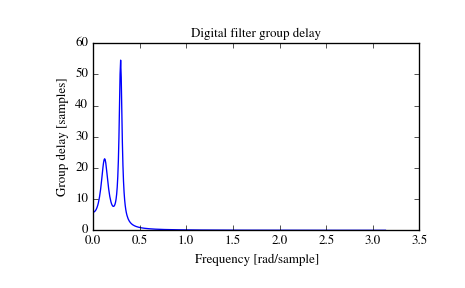

scipy.signal.group_delay¶
- scipy.signal.group_delay(system, w=None, whole=False)[source]¶
Compute the group delay of a digital filter.
The group delay measures by how many samples amplitude envelopes of various spectral components of a signal are delayed by a filter. It is formally defined as the derivative of continuous (unwrapped) phase:
d jw D(w) = - -- arg H(e) dwParameters: system : tuple of array_like (b, a)
Numerator and denominator coefficients of a filter transfer function.
w : {None, int, array-like}, optional
If None (default), then compute at 512 frequencies equally spaced around the unit circle. If a single integer, then compute at that many frequencies. If array, compute the delay at the frequencies given (in radians/sample).
whole : bool, optional
Normally, frequencies are computed from 0 to the Nyquist frequency, pi radians/sample (upper-half of unit-circle). If whole is True, compute frequencies from 0 to 2*pi radians/sample.
Returns: w : ndarray
The normalized frequencies at which the group delay was computed, in radians/sample.
gd : ndarray
The group delay.
See also
- freqz
- Frequency response of a digital filter
Notes
The similar function in MATLAB is called grpdelay.
If the transfer function \(H(z)\) has zeros or poles on the unit circle, the group delay at corresponding frequencies is undefined. When such a case arises the warning is raised and the group delay is set to 0 at those frequencies.
For the details of numerical computation of the group delay refer to [R177].
References
[R177] (1, 2) Richard G. Lyons, “Understanding Digital Signal Processing, 3rd edition”, p. 830. Examples
>>> from scipy import signal >>> b, a = signal.iirdesign(0.1, 0.3, 5, 50, ftype='cheby1') >>> w, gd = signal.group_delay((b, a))
>>> import matplotlib.pyplot as plt >>> plt.title('Digital filter group delay') >>> plt.plot(w, gd) >>> plt.ylabel('Group delay [samples]') >>> plt.xlabel('Frequency [rad/sample]') >>> plt.show()
